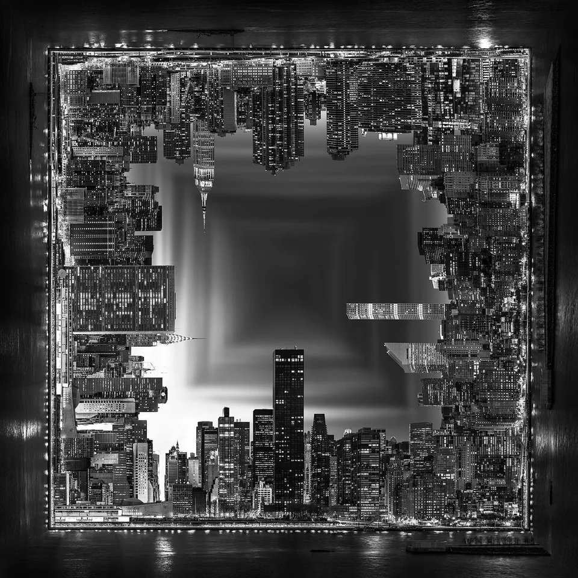

<!-- <div class="container" data-aos="fade-up" data-aos-duration="800" data-aos-easing="linear"> -->
<div class="container">
  <div class="page">
    <div class="section sec1">
      <h2 id="sec3" class="mb-3 text-center">Nuestro Trabajo</h2>

      <!--  Se pueden hacer imagenes de flechas custom, se necesitan los iconos-->

      <div class="glider mt-5">
        <ngx-glide
          [perView]="3"
          [gap]="50"
          [showArrows]="false"
          [showBullets]="false"
          [type]="'carousel'"
          [autoplay]="3000"
          [hoverpause]="true"
          [swipeThreshold]="10"
          [dragThreshold]="12"
          [draggable]="true"
          [touchRatio]="0.5"
          [touchAngle]="45"
          [animationDuration]="1000"
          [rewind]="true"
          [rewindDuration]="800"
          [animationTimingFunc]="'ease-out'"
          [direction]="'ltr'"
          [breakpoints]="{ '768': { perView: 1 }, '1200': { perView: 2 } }"
        >
          <div>
            
          </div>
          <div>
            
          </div>
          <div>
            
          </div>
          <div>
            
          </div>
        </ngx-glide>
      </div>
    </div>
  </div>
</div>
